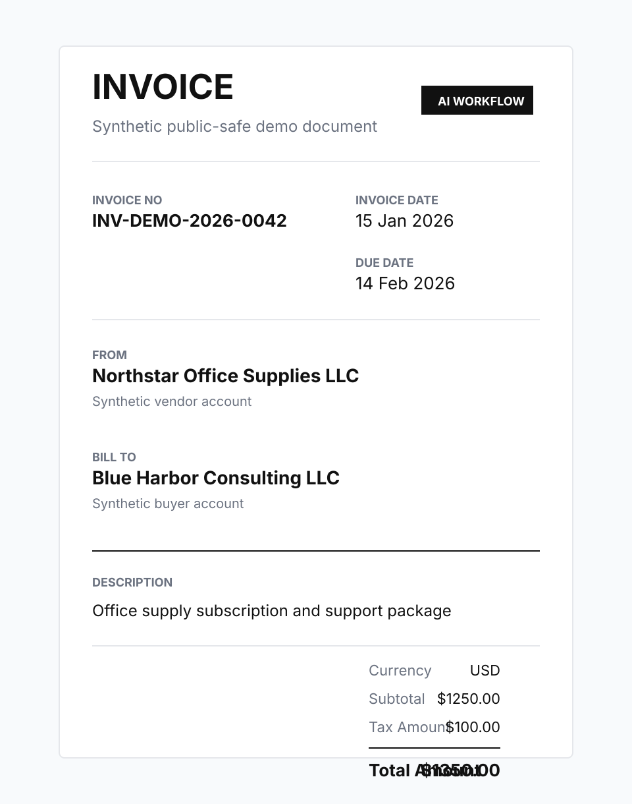
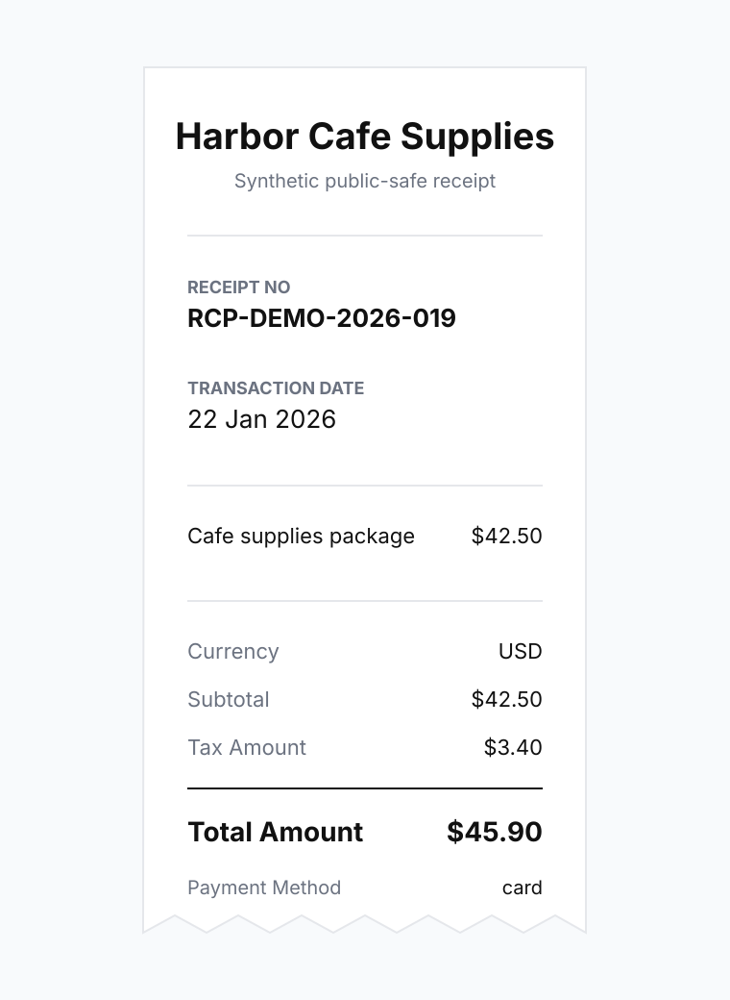
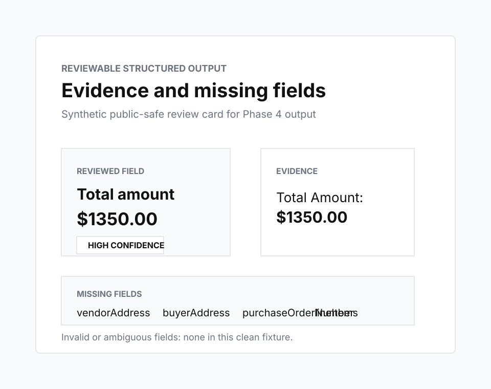

Status: working serverless platform module with public-safe static evidence and one live ingestion-comparison tool. The public examples demonstrate bounded capabilities; they are not a production document-approval product.
Problem
Many business workflows still begin with unstructured documents: invoices, receipts, statements, forms, and messages. Extracting values is only part of the problem. The harder question is whether a person can review where each value came from and understand what was not found.
System boundary
The backend accepts documents, stores document artifacts and metadata, queues asynchronous processing, extracts or understands text, produces structured fields, applies deterministic workflow validation, records review and audit state, and supports grounded retrieval over approved knowledge collections.
The public Systems page does not expose private documents or an operational review queue. Three child routes replay synthetic, pre-generated evidence. The ingestion comparator is the only public child tool that uploads a visitor-selected document to the backend; it publishes its own format, size, retention, and advisory-analysis boundaries before submission.
Architecture and trust boundaries
DynamoDB stores document, workflow, and audit records; S3 stores document-derived artifacts; SQS separates upload requests from processing; and optional OpenSearch/Bedrock capabilities support grounded knowledge retrieval. OCR is a fallback for image-only receipt and invoice inputs, not the default claim for every document.
The important boundary is between interpretation and authority. Models may describe, extract, compare, or summarise. Deterministic validation and a human reviewer remain responsible for workflow decisions.
Key decisions and trade-offs
- A serverless module reuses the platform's deployment, health, storage, and operations patterns, at the cost of asynchronous state that must be made explicit.
- Original documents and large generated artifacts stay in S3 while DynamoDB retains bounded metadata and workflow state.
- Evidence snippets, confidence, missing fields, and audit events are first-class outputs rather than hidden implementation details.
- Static public demos make review states inspectable without exposing private documents; they prove presentation and workflow semantics, not live-model accuracy.
- Retrieval and AI-generated comparisons remain optional so deterministic extraction and parser output can still be inspected independently.
Pipeline
The public evidence begins with the path from document text to structured, reviewable fields.
Interactive invoice review demo
Try a static public demo that shows four synthetic document scenarios moving from document reading to extracted fields, business checks, AI-assisted reviewer summary, simulated human action, and audit trail.
Business process knowledge demo
Try a static RAG demo that answers vendor onboarding questions from approved synthetic process documents, with retrieved source snippets, confidence, limitations, and no-answer behavior.
Document understanding demo
Try a static Knowledge Markdown demo that shows a product documentation PDF becoming structured Markdown, intermediate JSON, and diagnostics, with Bedrock visual descriptions inserted near the relevant pages.
Document ingestion comparator
Upload a PDF, DOCX, or HTML file and compare Markdown outputs from selected ingestion adapters, with parser-level warnings and optional AI-generated analysis.
What the examples use
The invoice visual below is synthetic and uses the same public-safe values as the extracted fields shown in the demo. The backend now supports OCR fallback for image-only receipts and invoices, but this static page does not run that backend path; it pairs the visual with matching transcript-derived output.

Demo 1: Vendor invoice extraction
The invoice demo shows how synthetic vendor invoice text becomes structured fields such as invoice number, vendor name, invoice date, due date, totals, and payment terms.
The point is not that the fixture is complex. The point is that the output is structured enough for a downstream workflow to inspect.
INVOICE Invoice No: INV-DEMO-2026-0042 Invoice Date: 15 Jan 2026 Due Date: 14 Feb 2026 From: Northstar Office Supplies LLC Bill To: Blue Harbor Consulting LLC Currency: USD Subtotal: $1250.00 Tax Amount: $100.00 Total Amount: $1350.00
Demo 2: Expense receipt extraction
The receipt demo applies the same Phase 4 idea to a different business document shape. It extracts merchant, date, category, subtotal, tax, tip, total, currency, and payment method from a synthetic receipt.
This shows that the workflow is not tied to one document template.

RECEIPT Merchant: Harbor Cafe Supplies Receipt No: RCP-DEMO-2026-019 Transaction Date: 22 Jan 2026 Currency: USD Subtotal: $42.50 Tax Amount: $3.40 Total Amount: $45.90 Payment Method: card
Demo 3: Evidence and missing fields
The evidence viewer shows why structured extraction needs review context. Fields are displayed with values, confidence levels, and supporting snippets. Missing fields are shown explicitly instead of being silently ignored.
That makes the output easier to inspect, explain, and route into the next workflow step.

Evidence: Total Amount: $1350.00
- vendorAddress
- buyerAddress
- purchaseOrderNumber
- lineItems
The display model still reserves these buckets so future workflows do not hide uncertainty.
What the public evidence demonstrates
The examples demonstrate the contract for producing and presenting reviewable structured data from everyday business documents.
- Document-type-aware field extraction.
- Public-safe fixture outputs.
- Confidence and evidence display.
- Explicit missing-field reporting.
- A clear boundary between extraction and workflow decisions.
Decision and review layer
The backend has moved beyond extraction into deterministic validation, exception handling, human review state, reviewer actions, and an audit trail. The invoice child demo presents a public-safe simulation of that progression.
The boundary remains deliberate: extraction and validation can prepare evidence, but the lab does not approve payments, reimbursements, or accounting entries on behalf of a user.
- Human review screens
- Validation and exception handling
- Business-rule routing
- Workflow state and audit trail
Limitations
- The current demos use synthetic public-safe fixtures.
- The public invoice image is a visual reference; extracted fields shown here come from matching synthetic transcripts.
- OCR support is a fallback for bounded receipt and invoice inputs; the static examples on this page do not validate a live OCR run.
- The examples are static and do not call production APIs.
- The public extraction outputs are demo artifacts, not a production review queue.
- The demos do not approve payments, reimbursements, or accounting entries.
- The demos do not make LLM-based decisions.
Source artifacts
The source demo packages are maintained in the private platform repository so the website copy, fixture references, QA notes, and claims review remain traceable to the backend platform work.
- Vendor invoice extraction package
- Expense receipt extraction package
- Evidence and missing-fields viewer package
Outcome and learning
The lab clarified that extraction quality is only one part of a trustworthy document workflow. A useful system must also expose provenance, uncertainty, missing information, validation, review authority, and audit state.
It also reinforced a practical separation: public demos can make the engineering contract understandable, while private document processing and operational review remain behind the platform boundary.